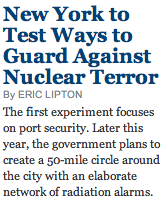

‘Terrible’ means awesome in French
Just how dangerous is the political manipulation of language? I got scared around the time newscasters started using “homeland” as if were an American English word rather than an unknown Bush staffer’s bizarre German import. With both the Department of Heimat Security and the PATRIOT Act getting uncritical play, it seemed we had completely and permanently ceded control of our language to a repressive government.
Fortunately, some instinctual social mechanisms are smarter than others. It is impossible for hysteria-enabled poisoning of the language to do permanent damage because language changes at the same pace as the society using it. Smart counter-phrases like security theatre enter the vernacular, driven by intuitive logic. What feelings do we now associate with the PATRIOT Act? Criticism of it once seemed unpatriotic (yielding to its namers’ intent), but today it’s widely understood that the law was reactionary, overreaching, and in conflict with any historical idea of American patriotism. What of it the judiciary has left intact, lawmakers will eventually (and quietly) reverse.
And what about “defending the homeland?” Buffoonish rhetoric that would hardly get a rise out of anyone in 2007. And the DHS itself is a laughingstock, best known for developing protection strategies for petting zoos and generally wasting billions of dollars securing the never-threatened heart land. It will take decades to undo the bureaucratic damage, but the days of unquestioned allocations (and stripped freedoms) in the invented name of the homeland are over.

With “homeland” and “PATRIOT” taken care of, I’m adding one more word to the manipulation of language deathwatch: terror, as a back-formation of “terrorism” used rhetorically for “acts of terrorism.” The newspaper yields to the terror temptation all too frequently, causing some confusion as the word’s original meaning, fear, is still very much in use. Is the city defending against terror—a post-terrorism panic that might kill more people than the act itself? I guess not! The newspaper would rather flourish the stale “terror = terrorism” metaphor a few more times than consider that possibility.
It’s unfortunate, because the correct meaning of “terror” really is worth defending against. Had we not been so terrified, and in such a disorganized state of shock, perhaps someone would have thought to interview a skyscraper structural engineer on the morning of September 11, 2001, as the two of the tallest buildings in the country burned furiously. In hindsight the potential for collapse is obvious, but in our government’s (and live news organizations’) state of terror that logical half-step was not made, or not made definitively enough, to save lives.
And that, as the Frenchies say, is not awesome.
Add a comment